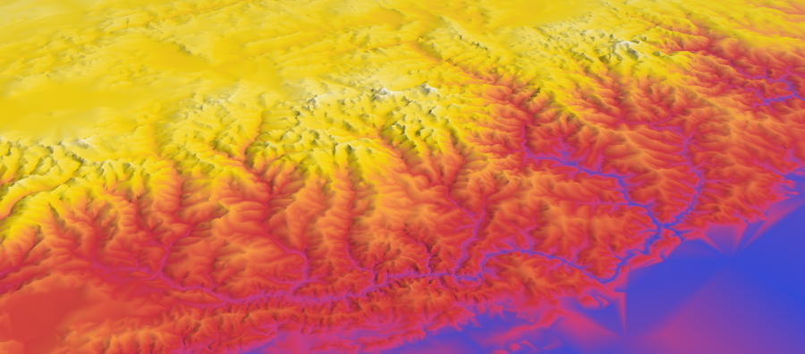
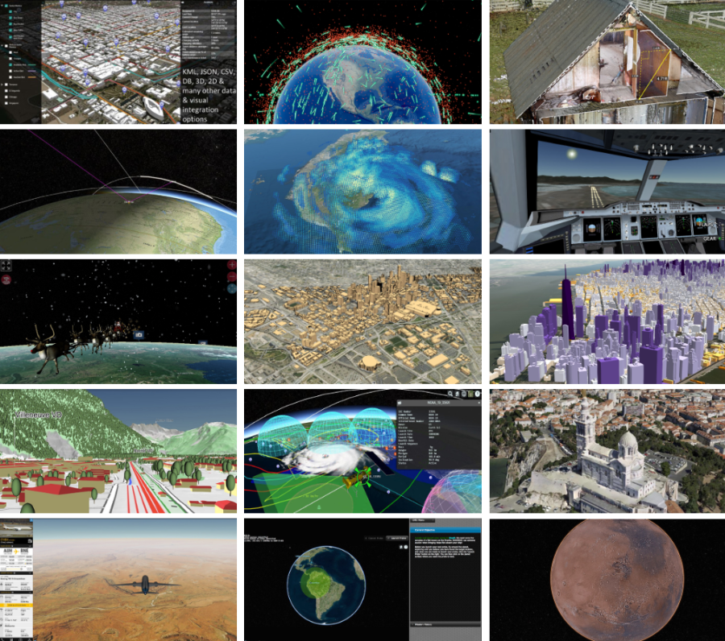

Cesium：世界级开源 JavaScript 三维地球与地图开发库¶
Cesium 是一个跨平台、跨浏览器的展示三维地球和地图的 JavaScript 开源开发库，可用于渲染 3D 地球，2D 区域地图，和多种 GIS 要素。Cesium 使用 WebGL 来进行硬件加速图形，不需要安装任何插件就能在支持 HTML5 标准的浏览器上运行，但是浏览器必须支持 WebGL。
Cesium 遵循 Apache2.0 开源许可协议，它可以免费的用于商业和非商业用途。Cesium 非常适合动态数据在 GIS 图层上的展示，在 WebGIS 表现层库领域非常有发展前途。Cesium 主要实现以下功能：
- 2D，2.5D，3D 形式的地图展示；
- 绘制各种几何图形、高亮区域，导入图片，甚至 3D 模型等多种数据可视化展示；
- 动态数据可视化并提供良好的触摸支持，支持绝大多数的浏览器和移动平台；
- 支持基于时间轴的动态数据展示。

Cesium 源自 Analytical Graphics, Inc.（AGI） 公司为客户开发的一个虚拟地球项目，后来 AGI 将 Cesium 项目贡献给开源社区并一直处于活跃开发状态（AGI 开发的 STK Terrain Server 是一种针对 Cesium 应用的流式高分辨率服务器）。另一个公司级的贡献者是 NICTA (National ICT Australia)，澳大利亚最大的信息与通讯技术中心。NICTA 的员工们贡献了瓦片地图服务、地形处理等 Cesium 核心功能，并一直使用 Cesium 开发环境监测分析、交通基础设施建模仿真优化等领域的应用。
目前，对比众多开源框架，Cesium 相对来说是比较适合 WebGIS 开发的，只要浏览器支持 WebGIS 就可以无需下载任何插件运行。并且大多数主流浏览器都已支持 WebGIS，包括很多手机自带的浏览器也逐渐开始支持 WebGIS，因此 WebGIS 的普及已是大势所趋。